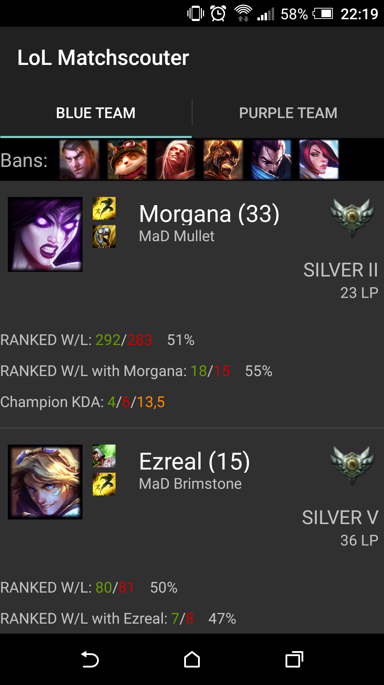
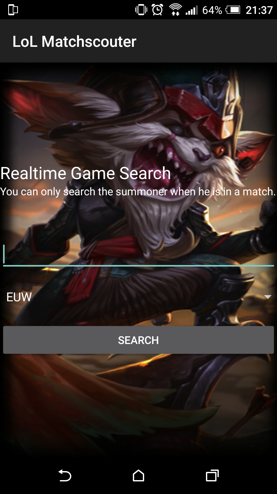

Description
Matchscouter for LoL is an Android app that allows you to quickfind all information about summoners you play with.
See the current rating for your teammates and enemies and use this advantage to climb the ladders!
This app provides realtime stats, therefore it will only show results if the player is currently in an active game.
How does it work?
Once a game has started, simply enter the name of one of the players in your match. Please make sure you have selected the correct server!

After pressing the search button, you will get realtime stats for your match. Ensure that the game has already started (at least on the loading screen). It does not work during champion select.
Features
You’ll be able to see the following information about each player in the match:
- Tier, Rank and League Points
- Ranked Wins/Losses (solo/duo queue)
- Ranked Winrate (solo/duo queue)
- Ranked Wins/Losses with the current champion (solo/duo queue)
- Ranked Winrate with the current champion (solo/duo queue)
- Champion KDA
- Count of games that the player has played with the current champion (Ranked)
- Summonerlevel (if summoner is not level 30)
- Bans
Server
Only works on the following servers:
- Europe West
- North America
- Europe Nordic & East
- Korea
- Latin America North
- Latin America South
- Brazil
- Oceania
- Turkey
- Russia
Riot Games
"Matchscouter for LoL" isn’t endorsed by Riot Games and doesn’t reflect the views or opinions of Riot Games or anyone officially involved in producing or managing League of Legends. League of Legends and Riot Games are trademarks or registered trademarks of Riot Games, Inc. League of Legends © Riot Games, Inc.